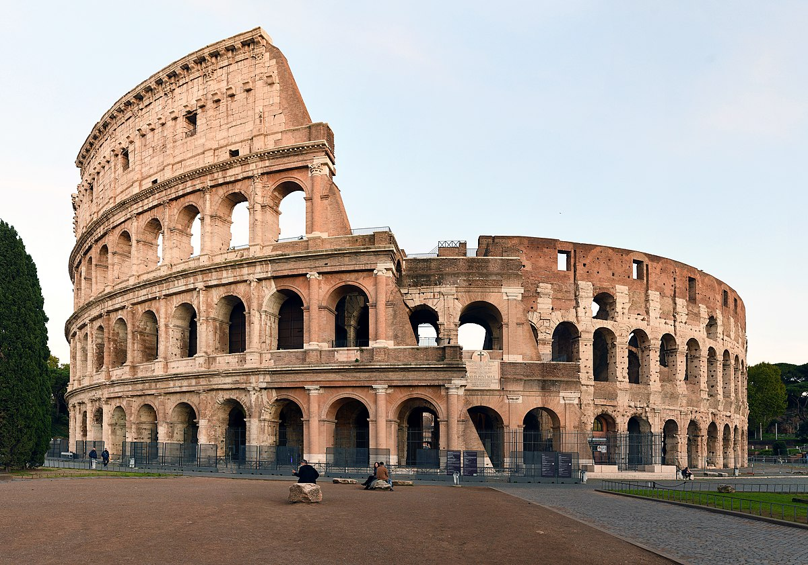

| Kyoto |
Japan |
Nijo Castle |
- Nijo Castle was the home of Tokugawa Ieyasu, the first in a line of powerful Tokugawa shogun that ruled the country for over 200 years
- The grounds house a renowned Japanese landscape garden, the Ninomaru Palace Garden
- The castle is a prime example of the architecture and design of the Edo period.
- It was designated as a UNESCO World Heritage site in 1994, recognizing its cultural and historical significance.
|
| Athens |
Greece |
 The Acropolis The Acropolis |
- The Parthenon’s architects, Iktinos and Kallikrates, designed the temple with built-in earthquake resistance.
- The village's homes were built with stone and wood, featuring narrow windows and limited balconies, resembling fortresses to protect against pirates and other threats.
- The Tower of the Winds, located on the slopes of the Acropolis, is the world’s oldest weather station
- Over centuries, the Parthenon has undergone several transformations. During the Byzantine Empire, it became a Christian church. Under the Ottoman Empire, it was converted into a mosque.
|
| Ithaca |
Greece |
Paleochora |
- Paleochora, meaning "Old Village," was the historical capital of Ithaca, Greece, during the Middle Ages and the early Venetian period.
- Paleochora served as Ithaca's capital until the 16th century when residents began to relocate to coastal areas.
- Several Byzantine churches, including the Dormition of the Virgin Mary (Palea Panagia), remain, showcasing ecclesiastical architecture and post-Byzantine frescoes.
- Situated on a slope opposite Perachori, the village offered a clear view of the sea, allowing residents to monitor approaching ships and potential threats.
|
| Santiago de Compostela |
Spain |
Santiago de Compostela Cathedral |
- Construction of the Cathedral of Santiago de Compostela began in 1057 on the foundations of a small church previously dedicated to the Apostle James. The first phase of construction took 36 years.
- Pilgrims were expected to arrive at any time of the day or night. They traditionally spent the first night praying and contemplating in the Cathedral of Santiago de Compostela. The doors of the church were never locked.
- The cathedral of Santiago de Compostela adorns the Spanish cent coins.
- In 1985 the Cathedral of Santiago de Compostela was declared a UNESCO World Heritage Site along with the old town of Santiago .
|
| Rio de Janeiro |
Brazil |
Corcovado Mountain |
- Mount Corcovado (“Hunchback”) is named for its shape. On its narrow summit towers the imposing statue of Christ the Redeemer, 98 feet (30 metres) tall.
- In 2007, Rio’s Christ the Redeemer statue was declared one of the New Seven Wonders of the World along with the Great Wall of China, the Taj Mahal, Machu Picchu, Petra, Chichén Itzá, and the Colosseum.
- Christ the Redeemer is struck by lightning an average of three to six times per year.
- Rio’s Christ the Redeemer isn’t even the tallest Jesus statue in Brazil. Christ the Protector in Encantado, Brazil, stands about 20 feet taller than Rio’s statue.
|
| Rome |
Italy |
The Colosseum |
- Construction of the Colosseum began in 72AD, and it was completed in 80AD.
- The Colosseum was originally known as the Flavian Amphitheater, because it was built by Emperors Vespasian, Titus, and Domitian, successors to Nero of the Flavian dynasty.
- It is the largest ancient amphitheatre ever built, and is still the largest standing amphitheatre in the world, despite its age.
|
| Cusco |
Peru |
 Machu Picchu Machu Picchu |
- Machu Picchu was built in the late 15th century and all signs point to it being abandoned merely a century later.
- Contrary to popular belief, Machu Picchu was never really 'lost.' While it gained worldwide attention after being 'discovered' by Hiram Bingham in 1911, locals were well aware of its existence.
- Its purpose is unknown. Theories abound, but no one knows for sure. Some historians believe it was a royal estate for the Inca emperor Pachacuti, while others argue it was a religious retreat.
|
| Copenhagen |
Denmark |
Tivoli Gardens |
- Tivoli Gardens opened on August 15, 1843, and was founded by Georg Carstensen. It's the second-oldest amusement park in the world, with the oldest, Dyrehavsbakken, also located in Denmark.
- The person who created Tivoli was Georg Carstensen. He got permission from King Christian VIII to build the park. He told the King that "when people are having fun, they don't think about politics." The King agreed and let Carstensen use a large area of land. This land was outside the city walls at the time.
- When Tivoli first opened, it was called "Tivoli & Vauxhall." The name "Tivoli" came from a famous garden in Paris. That garden was named after a town near Rome, Italy. The "Vauxhall" part was inspired by Vauxhall Gardens in London.
|
| Honolulu |
Hawaii |
 Waikiki Beach Waikiki Beach |
The name Waikiki means "spouting waters" in Hawaiian, referring to the freshwater streams and springs that once flowed into the ocean.
The white sand on Waikiki Beach is partially imported due to erosion. Sand has been added from Manhattan Beach, California.
Waikiki is considered the birthplace of modern surfing, with famous figures like Duke Kahanamoku popularizing the sport in the early 20th century.
|
| Bali |
Indonesia |
 Pandawa Beach Pandawa Beach |
The beach is named after the five Pandawa brothers from the Hindu epic Mahabharata, and statues of them, along with their mother Kunti, are carved into the cliffs.
Pandawa Beach was once a small village of fishermen who grew seaweed.
Compared to other popular beaches like Kuta, Pandawa is known for its calmer waters and family-friendly atmosphere.
|
{kind=link}